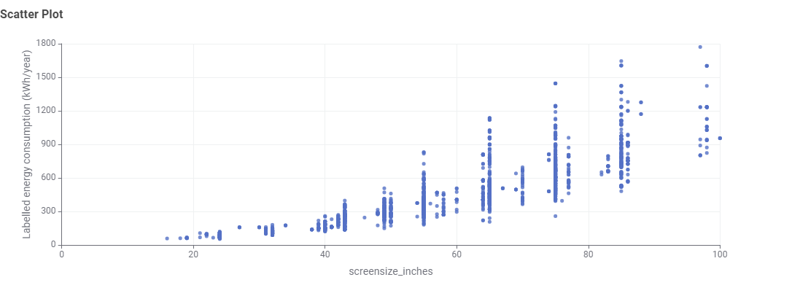

STORYBOARD 1
Does a Bigger TV Use More Energy?
First, let's look at the relationship between television screen size and annual energy consumption.

WHAT DOES THE DATA SHOW?
Bigger screens generally consume more energy.
The scatter plot shows a clear upward pattern. Smaller televisions are mostly concentrated at lower annual energy consumption levels, while larger televisions generally appear at much higher levels.
However, televisions with similar screen sizes do not always consume the same amount of energy. The spread of points becomes particularly noticeable among larger TVs.